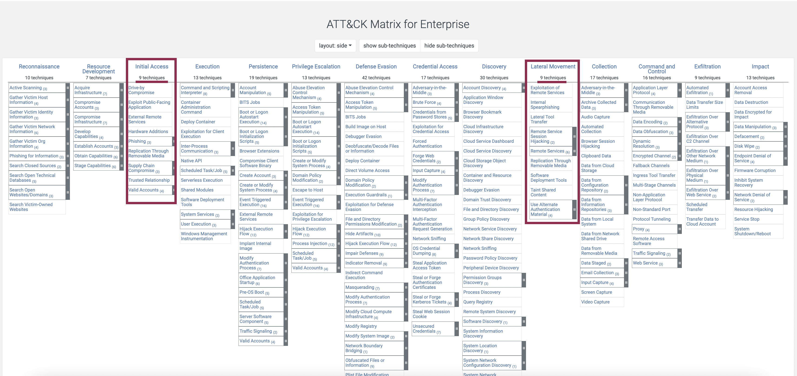

Being proactive is usually better than just defending. You know the saying: “The best defence is a good offence”. That’s a great application of this phrase.
https://www.crowdstrike.com/cybersecurity-101/cyber-big-game-hunting/
ATT&CK MITRE
Cyber Analytics Repository - https://car.mitre.org/. That’s basically what I was planning to write in here, but it’s already implemented and in a very neat way. Each tactic is described here along with a short description, categorisation, Splunk queries and available tools. As I said, need.
Matrices is another way to categorize attackers’ tactics and techniques. It’s a table (enterprise and mobile). In these tables attacking techniques are categorized by type and by attack stage. Clicking on any technique will bring you to its description, mitigation and detection tips.
What can I add to this? I really don’t know right now. I am relieved that I don’t have to do it myself and at the same time disappointed, I don’t get to research and analyse this information myself. I probably could add some examples from my own experience…., or additional tips… That’s some food 🍱 for thought. Here is a link to contribute. Looks like they are looking for more macOS and Cloud tactics and since I am particularly interested in these, it might be my niche.
One additional thing I could do here, is come up with some learning plan. And maybe use it as a sketch to sort other content on this website accordingly.
Threat Intelligence Methodology
The threat intelligence process can be broken down into 4 steps: Collect, Process, Analyze, and Share.
Collect.
Process. Normalize, correlate, confirm and enrich the data.
Analyze. Investigate, contain, remediate and prioritize.
Share.
According to the Crowdstrike model, threat hunters, vulnerability management and incident response belong in which intelligence area? Not tactical.
In creating an incident response capability in your organization, NIST recommends taking 6 actions. Three of them:
- Establish policies and procedures regarding incident-related information sharing
- Considering the relevant factors when selecting an incident response team model
- Develop incident response procedures
Which incident response team staffing model would be appropriate for a small retail store that has just launched an online selling platform and finds it is now under attack? The platform was put together by its very small IT department who has no experience in managing incident response. Completely outsource the incident response work to an onsite contractor with expertise in monitoring and responding to incidents
Which incident response team model would best fit the needs of a the field offices of a large distributed organizations? Distributed incident response team
Kibana queries examples:
event_type:NetworkConnection AND (net_src_ipv4:31.179.135.186 OR net_dst_ipv4:31.179.135.186)
The interesting part is that if you look at MITRE, you will notice that the lateral movement and initial access both have the least number of techniques.

What does it mean? It means that you have more chances to tune the detection mechanisms for these stages and then deduce and validate hypothesis for other stages.
Security Intelligence
Activities performed as a part of security intelligence can be divided into pre-exploit and post-exploit activities.
Pre-exploit activities. Prioritize vulnerabilities to optimize remediation processes and close critical exposures and detect deviations from the norm that indicate early warnings of APTs ???
Threat Intelligence Resources
Cybersecurity and Infrastructure Security Agency: https://www.cisa.gov/uscert/ncas/alerts/aa22-321a/
Key Concepts
All information should flow to one point, so that you can see everything. Then, you should automate intelligence and then become proactive. An organization’s security immune system should not be considered fully integrated until it is integrated with the extended partner ecosystem?
An organization’s security immune system should !!!not be isolated from outside organizations, including vendors and other third-parties to keep it from being compromised.
Statistics
50-60 tools is the average number of tools to be reported as being used by IT in companies. 35% of them have overalpping capabilities and 80% are misconfigured. So, 53% attacks can infiltrate without being detected and only 9% of alerts. Organazations always focus on credentials. The average enterprise has 85 different security tools from 45 vendors. According to the FireEye Mandiant’s Security Effectiveness Report 2020, organizations have an average of 50-70 security tools in their IT environments.
Breaches caused by which source resulted in the highest cost per incident in 2019? Not Criminal insider.
Phishing
Some time ago these were used to steal passwords and usernames. But now APTs use this technique, stealing organizations’ information and people identities. The average cost of a data breach is $3.86m and phishing accouts for 90% of them. 15% of people who fell the victims to a phishing scam, will be scamed at least once more during the year. Around 1.5m phising websites are created each month. 30% of phishing emails get opened.
Ransomware
2021 Trends
Many leverage an Exchange vulnerability.
How To Find
How To Defend
Analysing Endpoint Artefacts (Elastic)
rule.name: shell_history - to see cmd for a Linux machine.
Auditbit - linux user & process activity by Elastic. Sysmon - win (C:\Monitor\sysmonconfig-export).
Security -> Hosts -> Uncommon processes
Event_code: 25 (Sysmon process injection)
Application and Service Logs\Microsoft\Windows\Sysmon\Operational
event.category: "authentication" and event.outcome: "success" will help seeing the usual activity for this company.
uncoder.io - convert queries from one language to another.
Linux /var/log/auth.log, var/log/syslog, var/log/boot.log, var/log/cron, /var/log/cron, var/log/faillog,
🛠 Threat Intelligence Platforms
MISP
Threat Intelligence Sharing Platform.
Malpedia
Cloud
Dark Web
Expand …
https://www.wipro.com/cybersecurity/the-what-where-when-for-effective-dark-web-threat-hunting/ https://flare.systems/learn/resources/blog/dark-web-threat-intelligence/ https://www.cybersixgill.com/dark-web/ https://www.lifars.com/2021/04/threat-hunting-on-dark-web/ https://go.recordedfuture.com/thank-you/dark-web?submissionGuid=43bd588f-9538-458b-8890-bda5faf79fbd https://www.crowdstrike.com/cybersecurity-101/dark-web-monitoring/ https://www.brighttalk.com/webcast/15597/389088 https://flare.systems/learn/resources/blog/dark-web-threat-intelligence/#:~:text=Value%20as%20Threat%20Intelligence%3A%20The,forums%20for%20your%20organization's%20name. https://www.brookcourtsolutions.com/can-use-dark-web-threat-intelligence/References
Expand …
[1] Process overview
[2] SANS poster
[3] Official Website
[4] Ransomware: Current Trends and Updates, Cindy Murphy, Magnet Summit 2021 https://cyberdefenders.org/blueteam-ctf-challenges/90
[5] Hunting threats in the darknet [6] Scalable threat modeling via a single reference model and threat library [7] Deep dive in DFIR of incidents 2018 and 2019 [8] Another practical way of APT hunting and IR-based on ATT&CK methodology [9] Basics of threat intelligence [10] Active defense using Honeypots v2 [11] Hunting cybercriminals around the world [12] ML in the daily work of a threat hunter [13] Early threat modeling together with the development team [14] Threat Hunting - Part of the DFIR Summit - Solutions Track